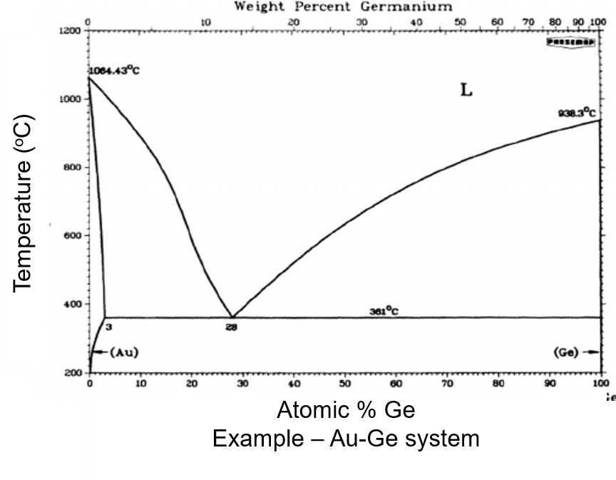
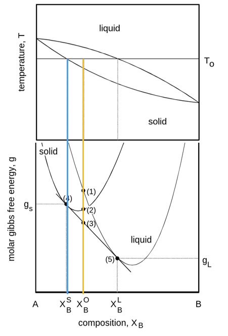
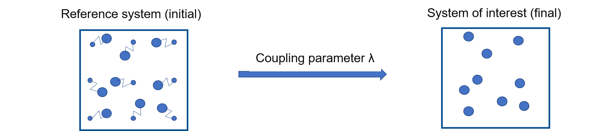
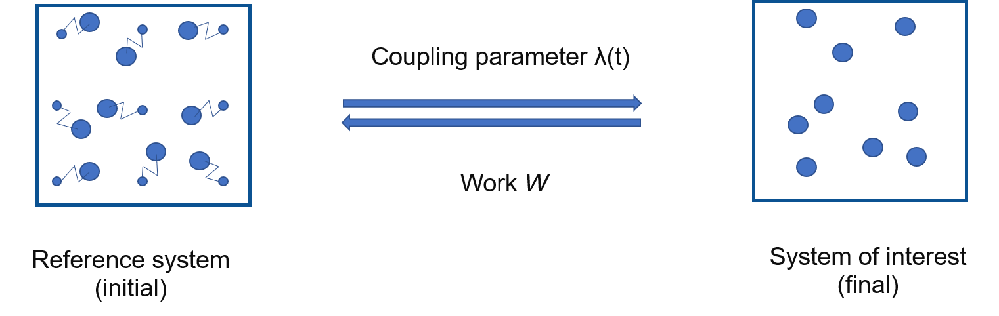
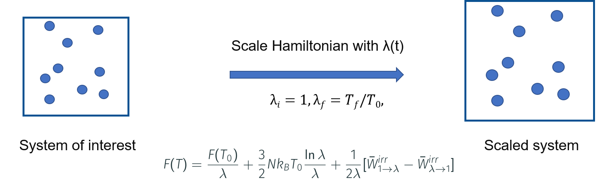

Phase diagrams and how to calculate them #
In this notebook, we will use the potentials fitted in the previous days for the calculation of thermodynamic properties such as Helmholtz and Gibbs free energies, which in turn can be used for the calculation of phase diagrams. We will discuss calphy, the tool for automated calculation of free energies, and the methology involved.
A simple phase diagram #
{kind=link}
Phase diagrams provide a wealth of information such as: coexisting lines, melting temperature, phase stability, nucleation mechanism.
Calculation of phase diagrams: the essential ingredients#
{kind=link}
Phase diagrams can be evaluated from free energy diagrams. The required input are:
\(G(P, T)\) for unary systems
\(G(x, T)\) for binary systems
Calculation of free energies: Thermodynamic integration #
{kind=link}
free energy of reference system are known: Einstein crystal, Uhlenbeck-Ford model
the two systems are coupled by $\( H(\lambda) = \lambda H_f + (1-\lambda)\lambda H_i \)$
Run calculations for each \(\lambda\) and integrate $\( G_f = G_i + \int_{\lambda=0}^1 d\lambda \bigg \langle \frac{\partial H(\lambda)}{\partial \lambda } \bigg \rangle \)$
To calculate \(F\),
for each phase
for each pressure
for each temperature
for each \(\lambda\)
If we choose 100 different \(\lambda\) values; 100 calculations are needed for each temperature and pressure!
Dimensionality: (phase, \(P\), \(T\), \(\lambda\))
Speeding things up: Non-equilibrium calculations #
Non-Equilibrium Hamiltonian Interpolation#
{kind=link}
In this method:
Discrete \(\lambda\) parameter is replaced by a time dependent \(\lambda(t)\)
Instead of running calculations at each \(\lambda\), run a single, short, non-equilibrium calculation
As discussed:
the coupling parameter \(\lambda\) earlier is replaced by a time dependent parameter
The equation also no longer has an ensemble average
These aspects makes it quite easy and fast to estimate this integral.
However:
this equation holds when the switching betwen the system of interest and reference system is carried out infinitely slowly
Practically, this is not not possible.
Therefore we can write:
\(E_d\) is the energy dissipation
\(E_d \to 0\) when \(t_f-t_i \to \infty\)
So far, so good, but how is this useful?
Instead of a single transformation from system of interest to reference, we switch back too
These are called forward \((i \to f)\) and backward \((f \to i)\) switching
\(t_f - t_i = t_{sw}\) is the switching time in each direction
If \(t_{sw}\) is long enough, \(E_d^{i \to f} = E_d^{f \to i}\)
and \(\Delta G = \frac{1}{2} (W_s^{i \to f} - W_s^{f \to i})\)
Now, we have all the components required for actual calculations.
We have also managed to successfully reduce the dimensionality
for each phase
for each pressure
for each temperature
~~for each \(\lambda\)~~
Dimensionality: (phase, \(P\), \(T\))
So, how do we calculate the free energy of a system modelled with a given interatomic potential?
Hands-on: Calculate free energy #
Before we really do the calculations, let’s convert our equations to a workflow.
Task: Find free energy of Al in FCC lattice at 500 K and 0 pressure#
Create an Al FCC lattice
Choose an interatomic potential
Run MD calculations at 500 K and 0 pressure to equilibrate the system
Introduce the reference system
Switch….
…..
Steps 1-3 should be fairly easy, we saw this in the last days and also in the first session. But how do we introduce a reference system?
A reference system is simply one for which the free energy is analytically known (\(G_i\))
We calculate the free energy difference between this and the system of interest.
In case of solids, a good choice of a reference system is the Einstein crystal. An Einstein crystal is a set of independent harmonic oscillators attached to the lattice positions.
The free energy of the Einstein crystal is:
We need to calculate:
\(\omega\)
A common way is $\( \frac{1}{2} k_i \langle (\Delta \pmb{r}_i)^2 \rangle = \frac{3}{2} k_\mathrm{B} T \)$
\(\langle (\Delta \pmb{r}_i)^2 \rangle\) is the mean squared displacement.
Now that we know about the reference system, let’s update our pseudo workflow:
Create an Al fcc lattice
Choose an interatomic potential
Run MD calculations at 500 K and 0 pressure to equilibrate the system
Calculate the mean squared displacement, therefore spring constants
Switch system of interest to reference system
Equilibrate the system
Switch back to system of interest
Find the work done
Add to the free energy of the Einstein crystal
As you can see, there are a number of steps that need to be done. This is where calphy and pyiron come in. These tools automatise all of the above steps and makes it easy to perform these calculations.
Import modules#
from pyiron_atomistics import Project
import matplotlib.pyplot as plt
import numpy as np
Create a project#
pr = Project('AlLi_thermodynamics')
Now we create a job within
al_sol = pr.create.job.Calphy("Al_fcc_500", delete_aborted_job=True, delete_existing_job=True)
There are a number of input the job can take. We can gain some information about the job from the docstrings.
al_sol?
Now we create an FCC structure and assign it to the Job
structure = pr.create.structure.ase.bulk('Al', cubic=True, a=4.09825).repeat(4)
structure.plot3d()
al_sol.structure = structure
First the interatomic potential need to be set. We can view the list of available interatomic potentials first.
al_sol.view_potentials()[10:20]
al_sol.potential = "2005--Mendelev-M-I--Al-Fe--LAMMPS--ipr1"
We run the job on four cores
al_sol.server.cores = 2
Now set up the calculation
al_sol.calc_free_energy(temperature=500,
pressure=0,
reference_phase="solid",
n_equilibration_steps=5000,
n_switching_steps=5000)
Before we actually run the calculation, let us discuss the various parameters. temperature keyword gives the temperature range over which the free energy is to be calculated. Since we provide 500, the free energy is calculated at this temperature. pressure denotes the pressure of the calculation, we chose 0 in this case. Since we are using a solid FCC lattice, we set reference_phase to "solid". This means that the Einstein crystal will be used as the reference system. Finally, we have n_equilibration_steps and n_switching_steps. n_equilibration_steps denotes the number of MD steps over which the system is equilibrated to the required temperature and pressure. n_switching_steps are the number of MD steps over which the system is continuously transformed between the given interatomic potential, and the reference Einstein crystal.
Now we can actually run the calculation
al_sol.run()
Let’s take a look at the output, first the free energy
al_sol.output.energy_free
The units are in eV/atom. We can also see the contributions from the reference system and the work.
al_sol.output.energy_free_harmonic_reference, al_sol.output.energy_work
The sum of which gives the energy.
We can plot and see the energy difference between the system of interest and reference system as a function of the coupling parameter.
plt.plot(al_sol.output.fe.forward['lambda'], al_sol.output.fe.forward.energy_diff[0],
label="forward", color='#C62828')
plt.plot(al_sol.output.fe.backward['lambda'], al_sol.output.fe.backward.energy_diff[0],
label="backward", color='#006899')
plt.legend()
plt.xlabel(r"$\lambda$");
Free energy variation with temperature #
Now that we have calculated the free energy successfully, we can see how we get the variation of free energy with temperature. The easiest option is to run the calculations we saw above at multiple temperatures. We do at 600 K and 700 K.
structure = pr.create.structure.ase.bulk('Al', cubic=True, a=4.1115).repeat(4)
al_sol1 = pr.create.job.Calphy("Al_fcc_600", delete_aborted_job=True, delete_existing_job=True)
al_sol1.structure = structure
al_sol1.potential = "2005--Mendelev-M-I--Al-Fe--LAMMPS--ipr1"
al_sol1.server.cores = 2
al_sol1.calc_free_energy(temperature=600,
pressure=0,
reference_phase="solid",
n_equilibration_steps=5000,
n_switching_steps=5000)
al_sol1.run()
structure = pr.create.structure.ase.bulk('Al', cubic=True, a=4.123).repeat(4)
al_sol2 = pr.create.job.Calphy("Al_fcc_700", delete_aborted_job=True)
al_sol2.structure = structure
al_sol2.potential = "2005--Mendelev-M-I--Al-Fe--LAMMPS--ipr1"
al_sol2.server.cores = 2
al_sol2.calc_free_energy(temperature=700,
pressure=0,
reference_phase="solid",
n_equilibration_steps=5000,
n_switching_steps=5000)
al_sol2.run()
Compile the results and plot them
temp = [500, 600, 700]
fes = [al_sol.output.energy_free, al_sol1.output.energy_free, al_sol2.output.energy_free]
plt.plot(temp, fes, 'o', label='fcc', color="#e58080", markeredgecolor="#424242")
plt.xlabel("Temperature (K)")
plt.ylabel("Free energy (eV/K)");
That works very well, but can we need three different calculations to arrive at the plot. Furthermore, in order to find the free energy at, for example, 650 K, we need to run another calculation. That is where, reversible scaling, the method discussed in the morning comes in.
Reversible scaling#
{kind=link}
As discussed in the morning lecture, Gibb’s free energy via reversible scaling at a constant pressure is given by,
\( G(N,P,T_f) = G(N,P,T_i) + \dfrac{3}{3}Nk_BT_f\ln{\dfrac{T_f}{T_i}} + \dfrac{T_f}{T_i}\Delta G \),
Therefore, \(G(N,P,T_f)\) can be computed from \(G(N,P,T_i)\) via the free energy difference \(\Delta G\).
Here, \(\Delta G = \dfrac{1}{2}[W_{if}-W_{fi}\)] — (2)
The reversible work is related to the internal energy \(U\) by, \(W = \int_{1}^{\lambda_f}<U> \,d\lambda\) — (3)
Using MD \(W\) can be computed as:
equilibrate for time \(t_{eq}\) in NPT ensemble
switch \(\lambda\) : \(1->\dfrac{T_f}{T_i}\) over time \(t_{sw}\)
calculate work \(W_{if}\) from (3)
equilibrate for time \(t_{eq}\) in NPT ensemble
switch \(\lambda\) : \(\dfrac{T_f}{T_i}->1\) over time \(t_{sw}\)
calculate work \(W_{fi}\) from (3).
In terms of actual calculation, nothing really changes. If a list of temperature is provided, pyiron realises that you want to perform a free energy calculation withing this range. Let’s try this now.
structure = pr.create.structure.ase.bulk('Al', cubic=True, a=4.09825).repeat(4)
al_sol3 = pr.create.job.Calphy("Al_fcc_ts", delete_aborted_job=True)
al_sol3.structure = structure
al_sol3.potential = "2005--Mendelev-M-I--Al-Fe--LAMMPS--ipr1"
al_sol3.server.cores = 2
al_sol3.calc_free_energy(temperature=[500, 700],
pressure=0,
reference_phase="solid",
n_equilibration_steps=5000,
n_switching_steps=5000)
al_sol3.run()
Lets plot the results together with the free energy values we calculated earlier
plt.plot(al_sol3.output.temperature, al_sol3.output.energy_free, label='RS', color="#e58080", markeredgecolor="#424242")
plt.plot(temp, fes, 'o', label='Direct', color="#e58080", markeredgecolor="#424242")
plt.xlabel("Temperature (K)")
plt.ylabel("Free energy (eV/K)")
plt.legend();
We can see that there is excellent agreement between the direct and reversible scaling calculations. However for reversible scaling calculations, we just need to run a single calculation instead of different ones.
Melting temperature of Al#
With the recipe we have, we can now go ahead and calculate the melting temperature of Al. This will actually give our first point on the phase diagram. First, the steps needed to find the melting temperature:
Since the \(T_m\) is 933 K, we can choose the range of 800-1100 K to calculate free energy
Calculate free energy of FCC structure in this range
Calculate free energy of liquid in this range.
By now, we have seen how to calculate the free energy of the FCC structure. This can be done rather quickly.
Free energy of solid#
structure = pr.create.structure.ase.bulk('Al', cubic=True, a=4.1362).repeat(4)
al_fcc = pr.create.job.Calphy("Al_fcc_tm", delete_aborted_job=True)
al_fcc.structure = structure
al_fcc.potential = "2005--Mendelev-M-I--Al-Fe--LAMMPS--ipr1"
al_fcc.server.cores = 2
al_fcc.calc_free_energy(temperature=[800, 1100],
pressure=0,
reference_phase="solid",
n_equilibration_steps=5000,
n_switching_steps=5000)
al_fcc.run()
Free energy of liquid#
Calculation of the free energy of liquid is as easy as changing the option reference_phase to "liquid". That is all the change that is needed. Run the calculation..
al_lqd = pr.create.job.Calphy("Al_lqd_tm", delete_aborted_job=True)
al_lqd.structure = structure
al_lqd.potential = "2005--Mendelev-M-I--Al-Fe--LAMMPS--ipr1"
al_lqd.server.cores = 2
al_lqd.calc_free_energy(temperature=[800, 1100],
pressure=0,
reference_phase="liquid",
n_equilibration_steps=5000,
n_switching_steps=5000)
al_lqd.run()
Before we actually look at the results, there are a couple of points to be discussed:
How is the liquid prepared in this calculation?
Start from the given structure
This structure is heated until it melts.
Melting of the structure is automatically detected by calphy
Once melted, it is equilibrated to the required temperature and pressure.
What about the reference system for liquid?
The reference system for the Liquid structure is also different. In this case, the Uhlenbeck-Ford system is used as the reference system for liquid.
The Uhlenbeck-Ford model is described by,
where,
\(\epsilon\) and \(\sigma\) are energy and length scales, respectively.
It is purely repulsive liquid model which does not undergo any phase transformations.
Now that we have covered these details, we can go ahead a look at the results.
plt.plot(al_fcc.output.temperature, al_fcc.output.energy_free,
label="Al solid", color='#C62828')
plt.plot(al_lqd.output.temperature, al_lqd.output.energy_free,
label="Al liquid", color='#006899')
plt.xlabel("Temperature (K)")
plt.ylabel("Free energy (eV/K)")
plt.legend();
The melting temperature is defined as the temperature at which the free energy difference between the solid and liquid phases is zero. We can also plot the free energy difference directly.
fediff = al_fcc.output.energy_free - al_lqd.output.energy_free
Find where the value is zero and get the corresponding temperature
arg = np.argsort(np.abs(fediff))[0]
tm = al_fcc.output.temperature[arg]
tm
The calculated melting temperature is shown above.
plt.plot(al_fcc.output.temperature, al_fcc.output.energy_free,
label="Al solid", color='#C62828')
plt.plot(al_lqd.output.temperature, al_lqd.output.energy_free,
label="Al liquid", color='#006899')
plt.axvline(tm, color="black")
plt.xlabel("Temperature (K)")
plt.ylabel("Free energy (eV/K)")
plt.legend();
plt.plot(al_fcc.output.temperature, fediff,
label=r"$\Delta F$", color='#C62828')
plt.axhline(0, color="gray")
plt.axvline(tm, color="black")
plt.xlabel("Temperature (K)")
plt.ylabel("Free energy (eV/K)")
plt.legend();
{kind=link}